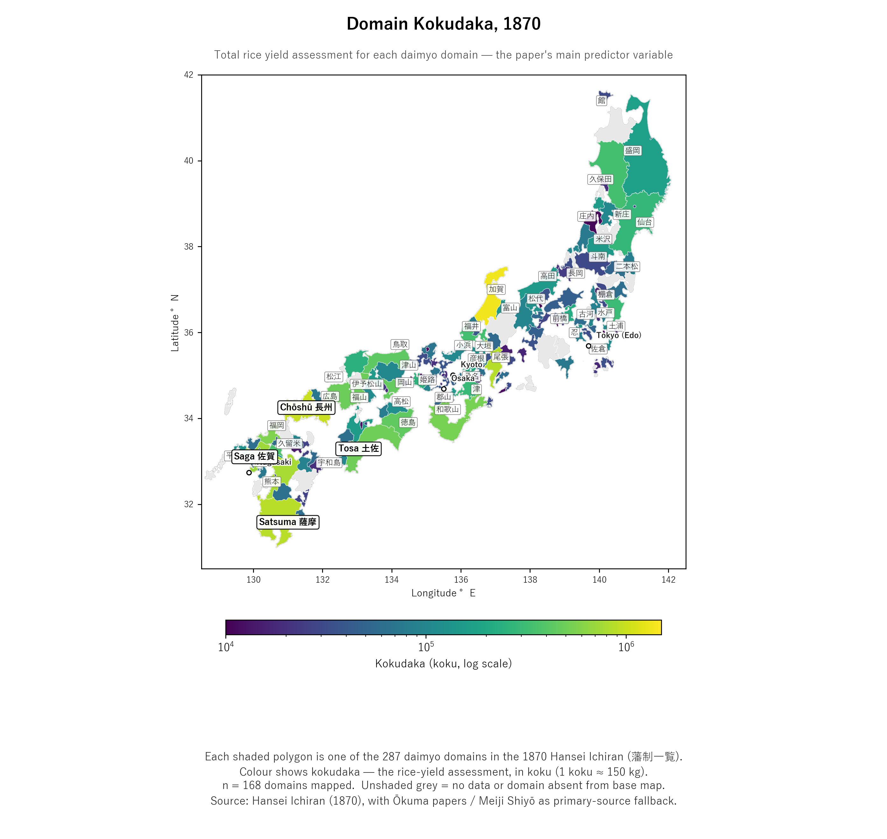

13 The 286 domains
The project’s dataset covers 286 daimyō (大名) domains — the full universe of han enumerated in Hansei Ichiran 1870, plus a handful of post-1869 administrative renames the source treats as separate entries.
13.1 Map: kokudaka (石高) across all 286 domains
The map below shows each domain colored by its kokudaka — the revenue assessment in koku of rice. This is the paper’s main predictor variable.

The base map draws only the 206 daimyō-domain polygons in the 1664 Harvard CHGIS shapefile. Roughly a quarter of Edo-period Japan was not a daimyō domain — it was land the Tokugawa shogunate held directly (tenryō 天領), land held by the shogun’s bannermen (hatamoto 旗本), or temple / shrine / imperial-court land. None of that has a daimyō, so none of it is in a 286-domain dataset, and it shows as blank white. The large white expanse through central Honshū (around Kōfu and Hida) is mostly shogunal tenryō. See the territorial-changes chapter for the full explanation, including the white-vs-grey distinction.
13.2 How to read the map
A few orientation points:
- The four colored labels (Satsuma, Chōshū, Tosa, Saga) are the Sat-Chō-Do-Hi coalition that led the Restoration. Three are in Kyushu (Satsuma, Chōshū at the western tip of Honshu, Saga) and one is on Shikoku (Tosa).
- Aizu, Sendai, Yonezawa, Shōnai, Morioka, Nagaoka in northern Honshu are the core of the Northern Alliance (pro-bakufu (幕府)) — visible as a band of medium-sized domains.
- The Edo (modern Tokyo) city marker is mid-Honshu; Kyoto and Osaka are to the west of it.
- The largest single domain in green near the centre-north is Kaga (加賀藩), the Maeda house, with kokudaka over 1.3 million koku — the largest non-Tokugawa daimyō in all of Japan.
13.3 What’s in the dataset
| Stratum | N | Description |
|---|---|---|
| Total domains | 286 | The universe |
| With kokudaka value | 276 | 10 are sub-han / sankyō (御三卿) branches with no land yield |
| With primary-source population | 258 | From Meiji Shiyō, Ōkuma papers, Tōkei Shūshi |
| Focal-4 / Tier-1 (薩長土肥) | 4 | Satsuma, Chōshū, Tosa, Saga — the hanseki hōkan originators commended in the 1871/7/14 haihan chiken decree (is_focal_han_tier1) |
| Tier-2 commendation (extension of focal-4) | 8 | Tier-1 plus Owari (Nagoya), Tottori, Kumamoto, Tokushima — the hanseki ritsu-sei implementation-merit domains commended on the same day (is_focal_han_tier2). See the Inoue and Kido primary transcriptions for the verbatim two-tier wording. |
| Northern Alliance (Ōuetsu Reppan Dōmei) | ~31 | Per 工藤威 (2002) |
| Tokugawa-cadet (shinpan (親藩)) | 29 | Per 児玉幸多『藩史総覧 (Hanshi sōran, “Comprehensive Survey of Han History”)』(1977) |
| Hereditary vassal (fudai (譜代)) | 137 | |
| Outside lord (tozama (外様)) | 117 |
13.4 Why 286 domains and not, say, 270?
The “exactly N daimyō” count varies by source because the definition shifts:
- In 1864 (mid-Edo): ~265 daimyō with productive fiefs
- In 1868 (Restoration year): ~280
- In 1870 (Hansei Ichiran): Adds post-Boshin reductions/relocations (e.g., 斗南藩 carved from reduced Aizu) — pushing the count up
- In 1871 (haihan chiken (廃藩置県)): All abolished. The final count just before abolition was about 281.
The project’s 286 includes: - All 281 domains existing at haihan chiken (1871) - 2 Tokugawa sankyō branches (sankyō: Tayasu and Hitotsubashi) — hatamoto-rank but had administrative existence (the third sankyō line, Shimizu, had gone extinct by 1870) - 3 post-1869 special cases that Hansei Ichiran records as their own entries (e.g., 鶴田藩, carved from a former Aizu sub-fief)
Two pairs of Hansei Ichiran entries look like separate domains but are not — which is why the dataset has 286 rows.
The first is the Honjō domain (Dewa province, the Rokugō (六郷) family), which Hansei Ichiran writes as 本庄藩 in volume 1 and 本荘藩 in volume 2 — two spellings of one domain, counted once.
The second involves Shōnai, which Hansei Ichiran records under its 1869 name 大泉藩 (120,000 koku, the Sakai family) — the canonical 庄内藩. A nearby entry, 邨岡藩 (村岡藩, Muraoka), is a visually similar but unrelated 11,000-koku tozama domain of the Yamana family in Tajima, counted as its own row. The two are distinct domains.
A study that uses prefecture-level (47 prefectures, post-1871) data loses all variation within the 286-domain set. A study that uses a 1864 daimyō dataset misses the post-Boshin reductions that are crucial for understanding which families fell from rank vs. stayed. Hansei Ichiran’s 1870 timing — between Restoration and abolition — is uniquely informative.
13.5 What’s NOT in the dataset (by design)
- tenryō (天領) — bakufu direct lands. These were governed by daikan (intendants), not daimyō. They became Meiji prefectures directly. The project includes one symbolic entry (大山領 = the Daisen-ji temple territory) for documentation but excludes them from analysis.
- kuge — kuge (公家), court nobility. Became kazoku (華族) in 1884 but on a different track (without revenue or military). The outcome variable (kazoku rank) is restricted to former-daimyō lines.
- Rows with no 1884 peerage rank — two rows in the dataset carry no kazoku rank, and both are genuine exclusions: 堀江藩 (the Ōsawa family, denied peerage after its kokudaka claim was found falsified in the 1871 Mangoku jiken) and 大山領, the Daisen-ji temple territory — never a daimyō domain, so no peerage applied. (A row that once appeared to be a third exclusion, 本庄藩, turned out to be a cross-volume duplicate of 本荘藩 and has been merged — see “Why 286 domains” above.) Other kaieki (改易, forced confiscation) cases — 林家 of 請西藩, for one — fall outside the dataset entirely, their domains dissolved before the 1870 survey.
Map source: Domain polygons from Harvard CHGIS 1664 daimyō shapefile (an approximation — 1664 boundaries were generally stable through 1870 but some small domains changed). kokudaka data: Hansei Ichiran (1870) with primary-source fallback (Ōkuma papers, Meiji Shiyō). Per-column citation in data_provenance.md.